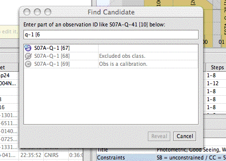

QPT 1.0.5 Release Notes
QPT 1.0.5 addresses 12 issues and one fault report, described below.
Release notes for the previous release are available here.
The QPT documentation index is available here.
To install this release of QPT, please do not use the
Update command in the Help menu. Install and run it using an alias as follows.
| To install → |
launcher -h:sbfmaps.cl.gemini.edu -i:qpt -a:qpt-1.0.5 -v |
| To run → |
launcher -a:qpt-1.0.5 |
| To uninstall → |
launcher -a:qpt-1.0.5 -u |
As always, the first time you run QPT it will download necessary components. This may
take several minutes, especially in the north. Your previous installation of QPT should
continue to function normally.
Please direct questions and comments to rnorris@gemini.edu and cc:gillies@gemini.edu
and the QC groups (if appropriate).
New and Notable
[QPT-57] - Visualizer now allows selection and dragging of multiple visits
You can now select multiple visits in the visualizer and drag them around. Shift+click to select a range, or Ctrl+click (Cmd+click on Mac) to select/deselect individual visits. There is also a Select All item in the Edit menu, and a Compact Selected Visits item in the Visits menu (this item will remove any empty space between selected visits, pushing them to the left as needed).
[QPT-175] - Finally! Copy and Paste!
Visits can now be cut, copied, and pasted between variants within the same plan. Pasting works the same as with a text editor; if there is anything selected when you paste, it will be replaced by what's on the clipboard. If you try to paste a visit for an observation that's already scheduled, you will be prompted to skip, replace, or cancel.
[QPT-211] - Candidate observations requiring dark time are scored higher
The scoring algorithm now takes the SB bucket into consideration and assigns higher scores to candidate observations that have a tighter SB constraint. So during dark time, obs that can be postponed until dark time is over will be scored lower than those that need to be observed now. In some cases the differential may be high enough to cause an obs to "jump" into a higher band, but the scoring algorithm takes a lot of things into account so it's not easy to predict when this will happen. Please keep an eye on this feature and let me know if the effect here seems to be too strong or too weak.
[QPT-234] - New "Show All" option for Candidate Observations
The Candidate menu now has a Show All option, which will temporarily disable all filters and show all observations in the Candidate Observations view. Deselecting this option restores the previous set of filters.
[QPT-239] - Variants can now have a Wind Constraint
The variant editor now allows you to specify an azimuth position and range (i.e., 45°±10°) for the likely wind direction. QPT will then issue a warning if you schedule a visit that requires will require you to point into the wind.
[QPT-257] - New Find Candidate command
There is a very cool new Find Candidate command that allows you to locate any observation in the database by typing part of its name. If the observation is not visible in QPT, it tells you why. You can select an observation from the list and reveal it in QPT (if it's not visible, QPT will turn off whatever filters are making it hidden). Hopefully this will solve the "why isn't this observation showing up?" problem.

[QPT-238] - New Merge Command
This command imports all the variants from another plan (same site/night), which can be useful during training or a time crunch if you have one person working on some variants and another person working on the rest. This command is located in the Plan menu.
[FR-6836] - Cisco VPN Support (Mac OS X)
The Cisco VPN client uses a distinct private IP address for the client side of the tunnel, which messes up a few things that QPT (and the OT) needs to do. So QPT now includes a specific hack that locates and talks to the Cisco software (if present and running) to determine the correct address to use for self-identification. This happens automatically, but note the following: the VPN must be running before you start QPT; client address interrogation happens only once, at startup. If you forget to start the VPN first, just quit QPT and restart. Also note that if the VPN is connected, you will only be able to see databases on the VPN interface; databases on the local network will not be visible (this is normally only a problem for developers working on QPT). Further note that you will get network exceptions from QPT when you're on the VPN because it is never possible to see both databases at once (i.e, you can see GN or GS but not both, due to the way the VPN is set up). These exceptions are harmless and can be ignored.
Other Significant Bug Fixes
- [QPT-206] - Finally fixed the jagged moon curve bug.
- [QPT-233] - Visualizer now displays UTC/LST when the corresponding option is selected in the Visit menu.
Other Minor and Self-Explanatory Changes Worth Mentioning
- Refresh (F5) command moved to the Plan menu.
- Update Software command was removed for now; it was too dangerous.
JIRA Release Manifest
Bug
- [QPT-206] - Plot lines are sometimes jagged
- [QPT-233] - Visualizer should display LST/UTC along with visit list
Improvement
- [QPT-57] - Allow multi-select in visualizer
- [QPT-175] - Allow copy/drag allocs between variants
- [QPT-211] - Weighting alg should make dark time more significant
New Feature
- [QPT-42] - Add MOS mask list to report.
- [QPT-234] - Add "show all" option for candidates
- [QPT-238] - Add feature to merge plans
- [QPT-239] - Add wind constraint
- [QPT-256] - Add support for Band 3 "success" times
- [QPT-257] - Add "why isn't X visible?" command
- [QPT-258] - Distinguish QC markers from observer markers; hide QC markers in published plan